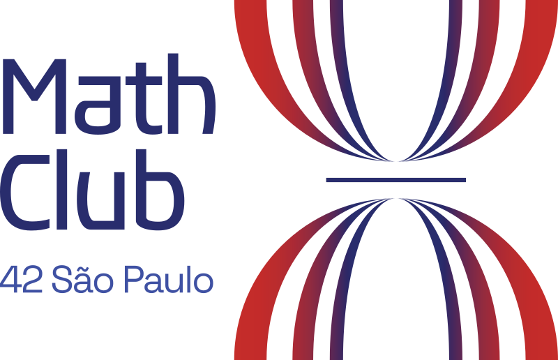

Clube de Matemática
@ 42 São Paulo
Regimento do Grupo de Estudos
Versão 1.0.0 — 2026
Este regimento apresenta os princípios, valores e diretrizes operacionais do Clube de Matemática da 42 São Paulo. O clube tem como propósito criar um ambiente de aprendizado colaborativo onde cadetes possam desenvolver fundamentos matemáticos sólidos, fortalecer o raciocínio lógico e, acima de tudo, sentir que pertencem a uma comunidade.
Os valores do Clube de Matemática orientam nossas interações, decisões e a cultura do grupo. Eles refletem nosso compromisso com um ambiente de aprendizado inclusivo, seguro e eficaz, onde todo cadete pode crescer e contribuir.
Cada membro contribui para o esforço coletivo e reconhece seu papel como essencial para o sucesso do grupo. Isso inclui não apenas comprometimento individual, mas também a disposição de apoiar e encorajar colegas que estejam enfrentando dificuldades seja com um conceito matemático ou com a permanência na 42.
Criar um espaço seguro onde os cadetes possam tirar dúvidas sem julgamento é central para o clube. Ninguém deve sentir vergonha por não entender algo — a matemática é uma jornada e toda pergunta é válida. O feedback entre membros deve ser honesto, respeitoso e voltado ao crescimento.
Os cadetes da 42 vêm de formações muito diversas: alguns nunca viram Cálculo, outros têm graduação em exatas. Essa diversidade é uma força. O clube valoriza diferentes formas de pensar e aprender, criando um ambiente onde todos se sintam confortáveis para contribuir independentemente do seu ponto de partida.
Um dos objetivos centrais do clube é fazer com que o cadete sinta que tem um lugar na 42 — pessoas que esperam por ele, um grupo ao qual pertence. Presença regular nas sessões não é apenas uma questão de aprendizado, mas de fortalecer os laços que mantêm a comunidade unida.
A matemática exige tempo e prática. O clube celebra o processo, não apenas o resultado. Errar faz parte do aprendizado e encarar desafios difíceis com persistência é mais valioso do que chegar rápido à resposta certa.
Objetivos claros fornecem direção e propósito ao Clube de Matemática. Ao defini-los desde o início, o grupo estabelece um entendimento comum sobre o que pretende alcançar e como o sucesso será medido.
Desenvolver uma base sólida de raciocínio matemático e lógico entre os cadetes da 42 São Paulo, contribuindo diretamente para a permanência, o pertencimento e o desempenho no curso.
Para alcançar esse objetivo, o clube atuará sobre três pilares:
Fortalecimento de fundamentos matemáticos essenciais para a programação;
Criação de um espaço de comunidade e apoio mútuo entre cadetes;
Redução da taxa de abandono causada por dificuldades lógico-matemáticas.
O clube focará no desenvolvimento progressivo de conhecimentos matemáticos práticos e aplicáveis ao contexto da 42. Por meio de sessões estruturadas, exercícios colaborativos e desafios progressivos, os membros construirão uma base sólida nas áreas definidas no Capítulo 5 deste regimento.
O sucesso será medido por:
Realização de ao menos uma sessão por semana de forma contínua;
Participação ativa de ao menos 8 cadetes por sessão;
Relatos positivos de membros sobre impacto na confiança e na permanência.
Muitos cadetes abandonam a 42 nas primeiras semanas por dificuldades com lógica, raciocínio abstrato ou matemática básica. O clube oferecerá suporte específico nesses pontos críticos, criando uma rede de apoio para quem está travado e se sente sozinho.
Além do conteúdo matemático, o clube funcionará como um ponto de encontro regular — um grupo menor na comunidade maior da 42, onde o cadete tem rostos conhecidos, pessoas que torcem por ele e um motivo concreto para aparecer no campus.
Após os primeiros ciclos de atividade, o clube documentará sua metodologia, resultados e impacto observado em um documento formal a ser apresentado à equipe pedagógica da 42 São Paulo. O objetivo é institucionalizar o grupo, demonstrando de forma concreta sua contribuição para a retenção e o desempenho dos cadetes no cursus.
Os objetivos deste regimento são ambiciosos, mas alcançáveis para um grupo motivado de cadetes. Com sessões regulares, participação ativa e liderança compartilhada, é realista construir uma comunidade matemática relevante dentro da 42 em 6 a 12 meses. Se necessário, o grupo revisará periodicamente suas metas e condições de funcionamento.
O Clube de Matemática combina aprendizado estruturado com prática colaborativa. Para equilibrar teoria e aplicação, dois tipos complementares de sessões serão organizados: sessões de estudo e sessões de resolução de problemas. Além das reuniões regulares, o clube manterá um ambiente técnico compartilhado para comunicação, documentação e troca de conhecimento.
Frequência: uma vez por semana Duração: 2 horas
00:00 – 00:10 | Abertura: revisão do backlog e votação do que será discutido na sessão.
00:10 – 01:40 | Exploração: discussão e resolução colaborativa dos temas escolhidos. Quem trouxe um problema ou referência naturalmente contribui mais — mas qualquer membro pode assumir a explicação.
01:40 – 01:55 | Registro: soluções e descobertas relevantes são documentadas no repositório.
01:55 – 02:00 | Próxima sessão: definição do facilitador rotativo para o próximo encontro.
Para garantir que as sessões comecem e fluam bem, um membro assume o papel de facilitador a cada semana. Esse papel é leve: garantir que a sessão comece no horário, conduzir a votação do backlog e manter o tempo. O facilitador não precisa preparar conteúdo — o conteúdo vem do grupo.
A rotação é definida no final de cada sessão. Se o facilitador designado não puder comparecer, qualquer outro membro assume voluntariamente.
Um canal de comunicação no Slack (ou plataforma equivalente da 42) para coordenação e discussões;
Um repositório compartilhado (Vogsphere ou GitHub) para soluções, anotações e materiais de referência.
Documentar soluções de problemas e descobertas matemáticas é parte importante do processo de aprendizado. Os membros são incentivados a criar registros após resolver problemas desafiadores ou descobrir uma técnica nova.
Ao ingressar no Clube de Matemática, cada membro afirma seu compromisso com o sucesso coletivo do grupo. Os membros se comprometem a:
Comparecer às sessões com regularidade;
Preparar as sessões que liderarem com responsabilidade;
Participar ativamente da resolução de problemas;
Contribuir com a base de conhecimento do grupo;
Apoiar colegas que estejam enfrentando dificuldades, dentro ou fora do contexto matemático.
A prática individual é um componente essencial do desenvolvimento matemático. Os membros são incentivados a dedicar cerca de 1 a 3 horas por semana, fora das sessões agendadas:
Resolver problemas em plataformas como Khan Academy, Brilliant, CSES Problem Set ou Art of Problem Solving;
Revisar soluções da sessão anterior;
Explorar aplicações matemáticas no contexto dos projetos da 42.
Este capítulo apresenta as áreas matemáticas centrais que guiarão as atividades do clube, selecionadas por sua relevância direta para o cursus da 42 e para o desenvolvimento do raciocínio lógico-matemático dos cadetes.
A lógica formal é a espinha dorsal da programação e da matemática. Esta área cobre proposições, conectivos lógicos, tabelas-verdade, quantificadores, implicação, equivalência e demonstrações. Dominar lógica permite ao cadete entender o funcionamento interno dos programas e construir argumentos rigorosos.
A matemática discreta é o campo mais diretamente aplicável à ciência da computação. Inclui teoria ingênua dos conjuntos, relações, funções, combinatória, teoria dos grafos e indução matemática. Esses tópicos aparecem constantemente em algoritmos, estruturas de dados e análise de complexidade.
Uma base sólida em álgebra é fundamental para qualquer área da matemática aplicada. Esta área cobre manipulação algébrica, teoria dos números, aritmética modular, divisibilidade, MDC, MMC e sistemas de equações.
Probabilidade e estatística são cada vez mais relevantes na computação moderna, especialmente em algoritmos aleatorizados, análise de dados e inteligência artificial. Esta área abrange probabilidade básica, distribuições, esperança, variância e análise descritiva.
Esta área conecta a matemática diretamente à programação. Abrange análise de algoritmos, notação Big-\(\mathcal{O}\), complexidade de tempo e espaço, recorrências e técnicas de design de algoritmos (divisão e conquista, programação dinâmica, algoritmos gulosos).
O grupo busca ter aproximadamente 8 a 15 membros ativos dispostos a:
Comparecer às sessões com regularidade;
Contribuir para o compartilhamento de conhecimento e documentação;
Participar de exercícios práticos;
Colaborar construtivamente com outros membros.
Computadores ou quadros para demonstrações e resolução colaborativa;
Conexão estável à internet;
Capacidade de projeção ou compartilhamento de tela para explicações.
Khan Academy — fundamentos e exercícios progressivos;
Brilliant.org — problemas interativos de matemática e lógica;
Art of Problem Solving (AoPS) — problemas voltados ao nível de competição;
CSES Problem Set — algoritmos com foco em programação;
Project Euler — problemas matemáticos resolvidos com programação.
Latex — um sistema de designer de documentos;
Markdown — uma linguagem de marcação de documentos HTML;
Git — um sistema de repositório de códigos (Como latex e markdown);
knowledge-base/
├── README.md
├── guidelines/
│ ├── template-solution
│ └── rules-of-the-base
├── solutions/
│ ├── logic/
│ ├── discrete-math/
│ ├── algebra/
│ ├── probability/
│ └── algorithm/
├── problems/
│ ├── logic/
│ ├── discrete-math/
│ ├── algebra/
│ ├── probability/
│ └── algorithm/
├── techniques/
├── explanations/
├── core-knowledge/
└── resources/
├── cheat-sheets/
└── study-materials/knowledge-base/Raiz do repositório. Ponto de entrada para todo o conteúdo estruturado de aprendizado.
README.mdVisão geral do projeto, instruções de uso e guia de contribuição.
guidelines/Padrões e regras que definem como o conteúdo deve ser escrito e organizado no repositório.
template-solution — Modelo padrão para formatar cada
entrada de solução.
rules-of-the-base — Convenções de nomenclatura,
critérios de qualidade e padrões editoriais.
solutions/Soluções detalhadas passo a passo para os problemas, organizadas por
área matemática (logic/, discrete-math/,
algebra/, probability/,
algorithm/).
problems/Problemas para prática, ainda sem solução ou propostos como desafio.
Espelha exatamente a estrutura de subpastas de
solutions/.
techniques/Estratégias reutilizáveis de resolução de problemas e métodos matemáticos (ex.: indução, substituição, prova por contradição).
explanations/Textos conceituais que explicam o porquê de teoremas, demonstrações e ideias, indo além do procedimento mecânico.
core-knowledge/Definições fundamentais, axiomas e teoremas que servem de base para o restante do repositório.
resources/Materiais de apoio e documentos de referência rápida.
cheat-sheets/ — Folhas de fórmulas e resumos de
regras para consulta rápida.
study-materials/ — Leituras complementares, links
externos e textos de referência curados.
Nome do Problema:
Plataforma / Fonte:
Área: \(\square\) Lógica \(\square\) Mat. Discreta \(\square\) Álgebra \(\square\) Probabilidade \(\square\) Algoritmos \(\square\) Outro:
Dificuldade: \(\square\) Fácil \(\square\) Médio \(\square\) Difícil
Data de Resolução:
Resolvido Por:
Qual é o objetivo? Que tipo de raciocínio é necessário? Que informações foram fornecidas?
Que padrões você identificou? Que abordagens foram tentadas inicialmente?
Explique o raciocínio matemático central, as técnicas utilizadas e, quando aplicável, o código desenvolvido.
Liste os conceitos matemáticos, fórmulas ou técnicas utilizadas.
Que padrão matemático foi identificado? Que erro atrasou a solução?
Links para documentação, tutoriais ou recursos que ajudaram.
Proposições são afirmações que podem ser verdadeiras ou falsas. Os conectivos lógicos (negação \(\neg\), conjunção \(\wedge\), disjunção \(\vee\), implicação \(\Rightarrow\) e bicondicional \(\Leftrightarrow\)) permitem combinar proposições para formar argumentos complexos.
Tabelas-verdade analisam o comportamento de expressões lógicas em todos os casos possíveis. As Leis de De Morgan (\(\neg(A \wedge B) \equiv \neg A \vee \neg B\)) e outras equivalências permitem simplificar expressões.
Quantificadores universais (\(\forall\), “para todo”) e existenciais (\(\exists\), “existe”) permitem expressar afirmações sobre conjuntos de objetos. A lógica de predicados forma a base da linguagem matemática formal.
Técnicas como demonstração direta, por contra positiva, por contradição e por indução são ferramentas fundamentais do raciocínio matemático.
Operações como união (\(A \cup B\)), interseção (\(A \cap B\)), diferença e produto cartesiano (\(A \times B\)) aparecem constantemente em estruturas de dados e teoria de tipos.
Permutações \(P(n,k)\), combinações \(\binom{n}{k}\) e o princípio da inclusão-exclusão aparecem em análise de complexidade de algoritmos e contagem de estruturas.
Funções são relações com propriedades específicas essenciais para compreender mapeamentos em programação: injetividade (saídas distintas para entradas distintas), sobrejetividade (todo elemento do contradomínio é atingido) e bijetividade (ambas as propriedades).
Grafos \(G = (V, E)\) modelam relações entre objetos. Conceitos como caminhos, ciclos, conectividade e árvores têm aplicações diretas em redes e algoritmos de busca.
Técnica de demonstração para afirmações sobre números naturais, especialmente útil para provar a correção de algoritmos recursivos.
\(a \equiv b \pmod{m}\) estuda o comportamento dos números em relação a um módulo. Fundamental em criptografia e hashing.
Vetores, matrizes e transformações lineares são essenciais para computação gráfica, aprendizado de máquina e física computacional.
Divisibilidade, números primos, \(\gcd(a,b)\), \(\text{lcm}(a,b)\) e o Algoritmo de Euclides são a base de algoritmos criptográficos como RSA.
\(P(A) \in [0,1]\). Probabilidade condicional \(P(A|B) = \frac{P(A \cap B)}{P(B)}\) e independência são fundamentais para algoritmos aleatorizados.
Médias, medianas, desvios padrão \(\sigma\), percentis e visualizações são indispensáveis para qualquer projeto de análise de dados.
Distribuições binomial, Poisson e normal descrevem padrões comuns em dados reais. Esperança \(E[X]\) e variância \(\text{Var}(X)\) são medidas centrais.
O Teorema Mestre resolve recorrências da forma \(T(n) = aT(n/b) + f(n)\), permitindo analisar algoritmos recursivos como Merge Sort (\(T(n) = 2T(n/2) + \mathcal{O}(n) = \mathcal{O}(n \log n)\)).
A notação Big-\(\mathcal{O}\) permite comparar algoritmos de forma independente de hardware: \(\mathcal{O}(1) \subset \mathcal{O}(\log n) \subset \mathcal{O}(n) \subset \mathcal{O}(n \log n) \subset \mathcal{O}(n^2) \subset \mathcal{O}(2^n)\).
Divisão e conquista, programação dinâmica e algoritmos gulosos são paradigmas fundamentais para resolver problemas computacionais eficientemente.